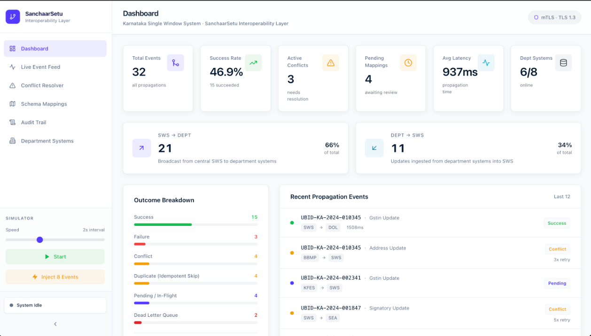

Application Report
SanchaarSetu: Syncing Systems You're Not Allowed to Change
A business in Karnataka updates its details once, on the Single Window System (SWS), but 40+ department systems each keep their own copy, and none of them can be modified. SanchaarSetu sits between them. It takes changes in by webhook or polling, drops duplicates, maps fields between schemas, holds conflicting updates for review, delivers through Kafka with retries, and writes every step to a hash-chained audit log. It won the AI for Bharat Hackathon in May 2026.
1Problem
Factories, BBMP, Commercial Taxes, Fire Safety: each department runs its own software, from its own vendor, on its own database. When a business changes its registered address or its authorised signatory on the SWS, those copies drift apart, and someone re-enters the change by hand, department by department.
The obvious fix, one master database that everyone reads and writes, isn't available. Departments have vendor contracts and workflows of their own, and direct database access to 40 systems is a security and bureaucratic non-starter. That constraint shaped everything: SanchaarSetu can only call APIs, receive webhooks, or poll. It's an adapter, not a replacement.
2Architecture
- SWS webhook
- dept webhooks
- API polling + snapshot diff
- FastAPI
- API key + rate limit
- Redis SET NX
- audit row
- Kafka (Redpanda)
- sanchaar-events
- conflict check
- field mapping
- deliver
- department APIs
- SWS
On failure: retry after 2, 4, 8, 16 s → sanchaar-dlq → dlq_messages table → operator replay

3Design Decisions
3.1Idempotency by time window, not by history
Source systems retry, so the same change arrives more than once. Remembering every event ever seen would grow forever. Instead, the key is a hash of the business ID, the event type and the current 60-second window, claimed in Redis with SET NX:
def make_idempotency_key(ubid: str, event_type: str, ts: float, window_seconds: int = 60) -> str:
window = int(ts // window_seconds)
raw = f"{ubid}:{event_type}:{window}"
return hashlib.sha256(raw.encode()).hexdigest()
ok = await redis_client.set(idemp, "1", ex=3600, nx=True)
if not ok:
return {"status": "duplicate", "idempotency_key": idemp}The trade-off is deliberate: a genuine second change to the same field inside the same minute is dropped as a duplicate. Business records like addresses don't change twice a minute, so I accepted that.
3.2Accept now, deliver later
The webhook answers straight away and hands the event to Kafka. If five of forty departments are down, a synchronous design would fail the SWS request; queuing keeps a dead department from breaking the source system. The cost is that the SWS can't tell the user immediately whether every department got the update. That status lives on the dashboard instead.
3.3Learned field mapping, with a human gate
Departments name the same thing differently: registered_address, factory_address, address. Hand-written mappings for 40 schemas break every time a department changes its API. SanchaarSetu compares field names with sentence-transformers (falling back to string similarity if the model isn't available). Matches at 0.85 or above are applied; anything lower waits in a review queue. Once approved, a mapping is stored and reused rather than re-inferred. Emails, phone numbers, Aadhaar and PAN numbers are scrubbed by regex before any text reaches the model.
3.4A 60-second conflict window
If the SWS and a department both change the same business within 60 seconds, that's treated as a conflict: delivery is held and a conflict record is opened for an operator, who resolves it with a policy (SWS wins, last write wins, or a manual choice). Sixty-five seconds apart, the two updates are simply applied in order.
3.5An audit log you can't quietly edit
Every row stores the previous row's hash and a SHA-256 over that hash plus its own fields. Change any past row and every hash after it stops matching.
4Built vs. Designed
The repository's docs describe a production system; the code is a hackathon build. This is what actually runs:
| Component | Status | Notes |
|---|---|---|
| Webhook ingest, Redis idempotency, API keys, rate limiting | BUILT | FastAPI |
| Kafka delivery, retries with backoff, dead-letter queue, replay | BUILT | aiokafka on Redpanda |
| Field mapping with review queue, PII scrubbing | BUILT | sentence-transformers, string-similarity fallback |
| Conflict detection and resolution UI | BUILT | In-memory 60 s window |
| Hash-chained audit log | BUILT | PostgreSQL |
| API polling and snapshot diff | BUILT | For systems without webhooks |
| Database change-data-capture (Debezium) | DESIGNED | Placeholder only |
| Multi-department sagas (Temporal) | DESIGNED | Not in the code |
| mTLS, Kubernetes, multi-broker Kafka | DESIGNED | Production plan |
5Results
An end-to-end suite (test_e2e.py) runs against the Docker Compose stack: SWS-to-department propagation, duplicate rejection, signatory and GSTIN updates, a simultaneous-update conflict through to resolution and requeue, a batch across many businesses, and change-detection ingest.
The project won the AI for Bharat Hackathon (PAN IIT, ₹1,00,000) and was recognised by the Joint Directors of Karnataka's Department of Industry & Commerce.
6What I'd Change
Found by reading the code. Keep, edit or drop each one:
- Retries block the queue. The backoff is an
asyncio.sleepinside the only consumer loop, so one department that's down holds up deliveries to every other department for up to 30 s per message. That's the opposite of the isolation in 3.2. A delayed retry topic (or a scheduled-retry table) keeps the main loop moving. - No partition key. Events are produced without a key, so Kafka doesn't keep one business's events in order, and the in-memory conflict window only works with a single consumer. Keying messages by business ID fixes both.
- The audit chain can fork. The writer reads the last hash, then inserts in a separate statement. Two writers at once can chain off the same parent. An advisory lock, or a single
INSERT … SELECTin one transaction, closes the gap. - Silent drops. A department that returns
200 OKbut discards the update is invisible today. A reconciliation job comparing SWS state with department state would catch it (risk R02 in the repository).